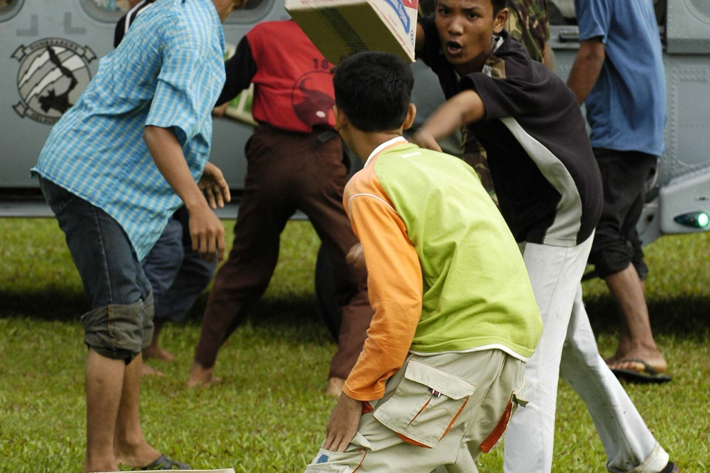

Independence and Humanity: Why Gotong Royong Needs a Knowledge Base
Kemerdekaan dan Kemanusiaan: Mengapa Gotong Royong Perlu Ilmu Dasar

Every 17 August, Indonesia remembers that independence was not given; it was fought for. For 81 years that struggle has taken many shapes: raising the flag in 1945, building schools and hospitals, and showing up for one another when disaster strikes. The founders placed humanity at the heart of this republic. The Preamble of the 1945 Constitution affirms the state's duty to protect the whole nation, and the second principle of Pancasila speaks of a just and civilized humanity. Freedom, in other words, was always meant to be shared.
Setiap 17 Agustus, Indonesia mengingat bahwa kemerdekaan tidak diberikan, melainkan diperjuangkan. Selama 81 tahun, perjuangan itu mengambil banyak wujud: mengibarkan bendera pada 1945, membangun sekolah dan rumah sakit, serta hadir untuk sesama saat bencana datang. Para pendiri bangsa menaruh kemanusiaan di jantung republik ini. Pembukaan UUD 1945 menegaskan kewajiban negara melindungi segenap bangsa, dan sila kedua Pancasila berbicara tentang kemanusiaan yang adil dan beradab. Kemerdekaan, dengan kata lain, sejak awal dimaksudkan untuk dibagi bersama.
Gotong royong is how that shared freedom looks in everyday life. When the 2004 tsunami tore through Aceh, Indonesians from every island moved as one: donating, cooking, opening their homes, and unloading relief supplies, sometimes even children joining in. That spirit is our inheritance. But 81 years have also taught us a quieter lesson: helping well is not the same as helping much.
Gotong royong adalah rupa kemerdekaan yang dibagi bersama dalam kehidupan sehari-hari. Saat tsunami 2004 menghantam Aceh, rakyat Indonesia dari setiap pulau bergerak serentak: menyumbang, memasak, membuka rumah, dan membongkar bantuan, kadang anak-anak pun ikut serta. Semangat itu adalah warisan kita. Namun 81 tahun juga mengajarkan pelajaran yang lebih tenang: menolong dengan baik tidak sama dengan menolong banyak.
That is why IIK Nahdlatul Ulama Tuban takes this seriously. Through the Indonesian Humanitarian Study Center (IHSC), established by the Rector's Decree in May 2026, the campus gives the nation's humanitarian spirit an academic home. IHSC is a study center that connects research with real action: producing evidence, running certified training, and advocating policies rooted in the Nusantara.
Karena itulah IIK Nahdlatul Ulama Tuban menanggapinya dengan serius. Melalui Indonesian Humanitarian Study Center (IHSC) yang dibentuk dengan SK Rektor pada Mei 2026, kampus memberi semangat kemanusiaan bangsa ini sebuah rumah akademik. IHSC adalah pusat studi yang menghubungkan riset dengan aksi nyata: menghasilkan bukti, menyelenggarakan pelatihan bersertifikat, dan mengadvokasi kebijakan yang berakar di Nusantara.
Anyone can volunteer, and we celebrate that. But humanitarian action is a discipline, not just a mood. It needs a knowledge base: how to assess needs, how to coordinate with other responders, which standards apply, and how to keep people safe. Kindness opens the door; training walks through it.
Siapa pun bisa menjadi relawan, dan itu patut kita syukuri. Tetapi aksi kemanusiaan adalah sebuah disiplin, bukan sekadar suasana hati. Ia membutuhkan ilmu dasar: cara menilai kebutuhan, cara berkoordinasi dengan sesama penanggap, standar apa yang berlaku, dan cara menjaga keselamatan orang. Kebaikan hati membukakan pintu; pelatihan yang melangkah masuk.
The world is testing this knowledge right now. In South Sudan, funding gaps will cut food aid to 240,000 refugees in September. In Afghanistan, five years after the Taliban returned, 4.7 million people face emergency-level hunger while the response collapses. This month, a 7.4 magnitude earthquake shook Colombia. Crises grow more complex by the year; responders must be trained, not merely willing.
Dunia sedang menguji pengetahuan ini. Di Sudan Selatan, kekosongan dana akan memutus bantuan pangan bagi 240.000 pengungsi pada September. Di Afghanistan, lima tahun setelah Taliban kembali berkuasa, 4,7 juta orang menghadapi kelaparan tingkat darurat di tengah respons yang ambruk. Bulan ini, gempa magnitudo 7,4 mengguncang Kolombia. Krisis kian kompleks dari tahun ke tahun; penanggap bencana harus terlatih, bukan sekadar berniat.
This is why HAF exists. Humanitarian Action Framework (HAF) is the foundational course of IHSC, held with Profesional Training Center on 29-30 August 2026, as the gateway to the advanced Humanitarian Action Workshop (HAW). Health workers and the public can register at forms.gle/9D67v52fUxnCMTfV7. On this 81st independence day, the best way to honor the founders is to serve with knowledge, not only with heart. Merdeka.
Untuk itulah HAF hadir. Humanitarian Action Framework (HAF) adalah kursus dasar IHSC, diselenggarakan bersama Profesional Training Center pada 29-30 Agustus 2026, sebagai gerbang menuju jenjang lanjutan Humanitarian Action Workshop (HAW). Tenaga kesehatan dan masyarakat dapat mendaftar di forms.gle/9D67v52fUxnCMTfV7. Di hari kemerdekaan ke-81 ini, cara terbaik menghormati para pendiri bangsa adalah mengabdi dengan ilmu, bukan hanya dengan hati. Merdeka.
Sources
Sumber
- UNHCR via ReliefWeb. Refugees in South Sudan face extreme hunger as funds run out: reliefweb.int/report/south-sudan/refugees-south-sudan-face-extreme-hunger-funds-run-out
- UNHCR via ReliefWeb. Pengungsi di Sudan Selatan hadapi kelaparan ekstrem saat dana habis: reliefweb.int/report/south-sudan/refugees-south-sudan-face-extreme-hunger-funds-run-out
- IRC via ReliefWeb. Five years since the Taliban took control of Afghanistan, humanitarian need is at a record high: reliefweb.int/report/afghanistan/five-years-taliban-took-control-afghanistan-humanitarian-need-record-high-response-collapses-irc
- IRC via ReliefWeb. Lima tahun Taliban berkuasa di Afghanistan, kebutuhan kemanusiaan di rekor tertinggi: reliefweb.int/report/afghanistan/five-years-taliban-took-control-afghanistan-humanitarian-need-record-high-response-collapses-irc
- ReliefWeb. Colombia: Earthquake, Aug 2026: reliefweb.int/disaster/eq-2026-000146-col
- ReliefWeb. Kolombia: Gempa Bumi, Agu 2026: reliefweb.int/disaster/eq-2026-000146-col
- Hero photo: U.S. Navy photo by Photographer's Mate Airman Jordon R. Beesley, January 2005 (public domain), via Wikimedia Commons.
- Foto utama: foto U.S. Navy oleh Photographer's Mate Airman Jordon R. Beesley, Januari 2005 (domain publik), via Wikimedia Commons.